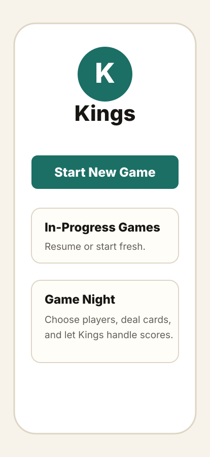
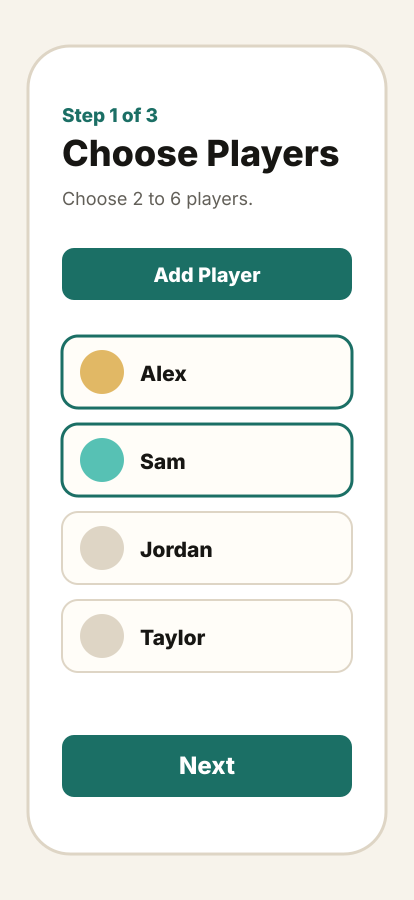
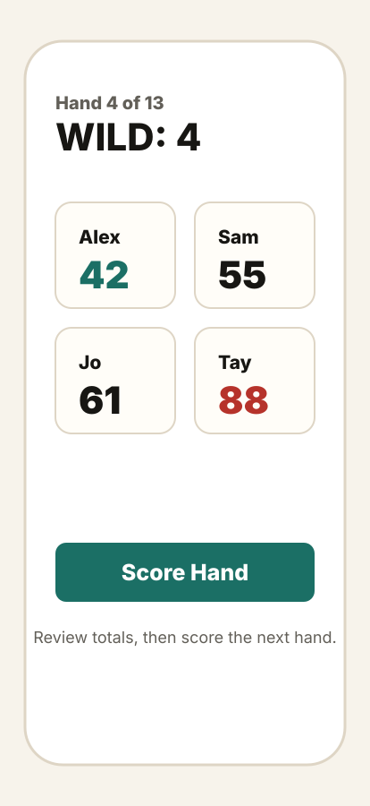
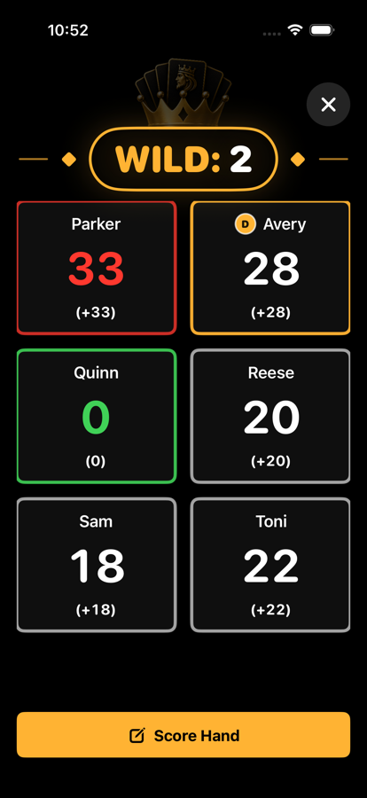
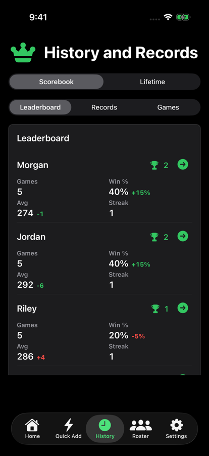
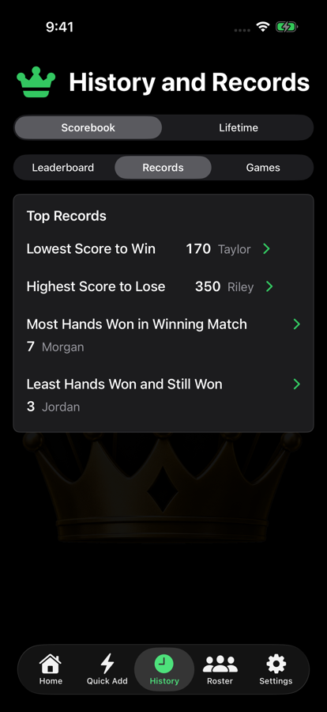
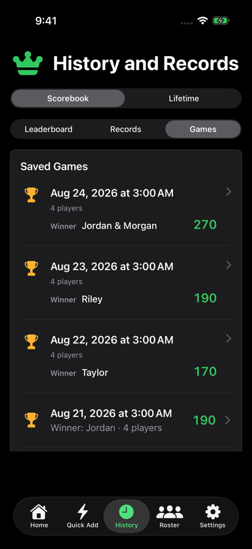
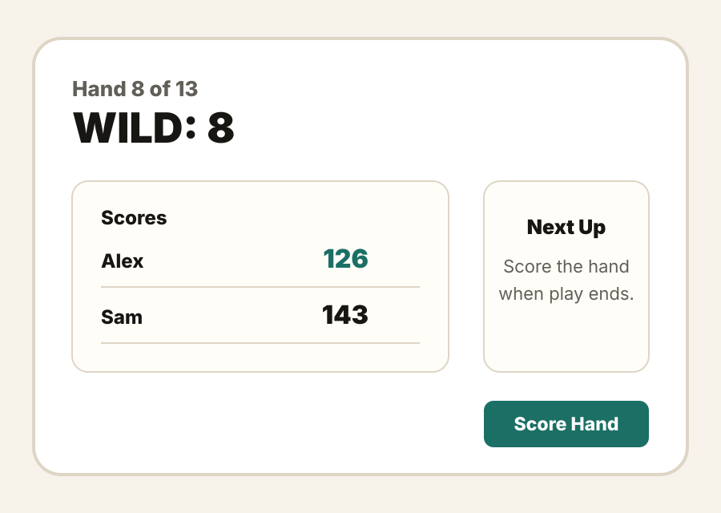

Gallery
See the main Kings screens before you download. Kings supports iPhone and iPad in portrait and landscape.
Gallery screenshots may show demo names and demo scores. Do not treat the scores shown here as real customer results.
Start a Game

Start a new game from the home screen.

Pick 2 to 6 players and keep table order clear.

Tap Score Hand when the next hand is ready.
Score and Review

iPhone scoreboard with totals, wild card, and Score Hand.

iPhone history view with lifetime leaders and player stats.

Top records highlight memorable wins, losses, streaks, and score swings.

iPhone saved games list after games are done.
iPad and Landscape

Kings supports iPad and landscape layouts. The app adjusts the same scoring, player, and history screens to make better use of the larger space.